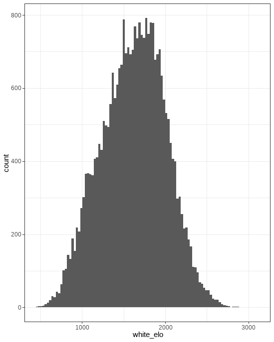

Hello! Welcome to my website.
I am a Senior at Virginia Tech majoring in Computational Modeling and Data Analytics (CMDA) & Statistics. I have published 3 papers, through my research on Privacy and Linguistics, and am currently curious about the current intelligence gathering systems, most notably the Large Language Model paradigm.
Below is a forthcoming analysis of chess data from Lichess, over the month of April, 2023.
Why should you care?
Because it’s awesome!. Also look look look at the pretty movie I made:

Alright with the introduction out of the way let’s get into this.
Challenge 1
- People play a lot of chess
104 million games were played, with a compressed size of 33.7 GB. The zst compression algorithm used is estimated to compress the file size by around 7 times, leading to a total file size of 210 GB. While my computer does theoretically have enough space, I am not about to purge the accumulation of wonderful videos and useful applications. Fortunately, this storage space is remarkably cheap and easy to get nowadays from simply a usb stick. The other technical limitation that this size of data provides relates to the working memory of the computer. To process data, most computer programs look at every single field, and anything that is relevant is temporarily saved and remembered. This capacity to remember the results requires a large enough memory capacity. As of time of writing, 8GB seems to be the default for average consumer laptops. Thus, the typical process, which presumes an in-memory approach, will not be sufficient. For example, here is a Very simplified overview and pseudo-code of what the process may look like:
for data_row in dataset {
for specific_item in data_row {
if is.na(specific_item) {
remove(data_row)
}
if is.character(specific_item) {
as.numeric(specific_item)
}
}
}
Note that the object dataset must be defined and able to be evaluated at all times. I.E., held in memory (and not lazily evaluated). The solution? Databases.
Databases
For this project, I used PostgreSQL (also and henceforth known as Postgres), due to its wide application across the industry and extensive documentation. Postgres is a client-server model, which means that it runs on a server, and supports multiple connections at once. This provides the advantage of defining user roles for security, and ease of connection, as there is no fundamentally different process having one or multiple computers talk to the database at the same time. Databases also get their speed from user or system defined indices; keys that tell Postgres where specific data is.
Setting up Postgres was surprisingly not trivial, as there were user permission conflicts along the way, however, once set up, it has been easy to work with.
Data Wrangling
Concurrently on setting up the database, I was writing code to break down the database record into something that 1) I could put into the database as a useful format and 2) I could analyse more easily. Below is an example of the format that the data was in before processing:
[Event "Rated Bullet tournament https://lichess.org/tournament/yc1WW2Ox"]
[Site "https://lichess.org/PpwPOZMq"]
[Date "2017.04.01"]
[Round "-"]
[White "Abbot"]
[Black "Costello"]
[Result "0-1"]
[UTCDate "2017.04.01"]
[UTCTime "11:32:01"]
[WhiteElo "2100"]
[BlackElo "2000"]
[WhiteRatingDiff "-4"]
[BlackRatingDiff "+1"]
[WhiteTitle "FM"]
[ECO "B30"]
[Opening "Sicilian Defense: Old Sicilian"]
[TimeControl "300+0"]
[Termination "Time forfeit"]
1. e4 { [%eval 0.17] [%clk 0:00:30] } 1... c5 { [%eval 0.19] [%clk 0:00:30] }
2. Nf3 { [%eval 0.25] [%clk 0:00:29] } 2... Nc6 { [%eval 0.33] [%clk 0:00:30] }
3. Bc4 { [%eval -0.13] [%clk 0:00:28] } 3... e6 { [%eval -0.04] [%clk 0:00:30] }
4. c3 { [%eval -0.4] [%clk 0:00:27] } 4... b5? { [%eval 1.18] [%clk 0:00:30] }
5. Bb3?! { [%eval 0.21] [%clk 0:00:26] } 5... c4 { [%eval 0.32] [%clk 0:00:29] }
6. Bc2 { [%eval 0.2] [%clk 0:00:25] } 6... a5 { [%eval 0.6] [%clk 0:00:29] }
7. d4 { [%eval 0.29] [%clk 0:00:23] } 7... cxd3 { [%eval 0.6] [%clk 0:00:27] }
8. Qxd3 { [%eval 0.12] [%clk 0:00:22] } 8... Nf6 { [%eval 0.52] [%clk 0:00:26] }
9. e5 { [%eval 0.39] [%clk 0:00:21] } 9... Nd5 { [%eval 0.45] [%clk 0:00:25] }
10. Bg5?! { [%eval -0.44] [%clk 0:00:18] } 10... Qc7 { [%eval -0.12] [%clk 0:00:23] }
11. Nbd2?? { [%eval -3.15] [%clk 0:00:14] } 11... h6 { [%eval -2.99] [%clk 0:00:23] }
12. Bh4 { [%eval -3.0] [%clk 0:00:11] } 12... Ba6? { [%eval -0.12] [%clk 0:00:23] }
13. b3?? { [%eval -4.14] [%clk 0:00:02] } 13... Nf4? { [%eval -2.73] [%clk 0:00:21] } 0-1
This is already a very useful format. Data that I did not extract includes the date, time, round, and any title information. I did not have any questions that I wanted answers to that included the first three fields, and I feel that the granularity of the Rating field encompasses any differences between titled and non-titled players. Due to the zst decompression algorithm I used, the game was lumped together, rather than including line breaks. This helped, as I was easily able to ensure all of my game data was in the correct order, however, means that I was splitting based on ‘}’, and then checking how many periods preceded, to know who the move belonged to. My parser is fairly robust, and I tried to throw away as little data as possible, despite a clear surplus. For example, hxg8=N!!# could be a valid move, despite being very much so an edge-case. The script also has a debug mode that allows me to print out specific game or line numbers; useful for validation, and fixing edge-cases that arise. Anything that my script fails at parsing gets thrown into a log.txt file, which includes such games as:
1. e4 1-0
or
something else here.
Ommitted games include in-progress games or games that do not have clock data (due to a mistake).
Data Analysis
One of the main reasons that I embarked upon this project was that I knew that I could use normal R syntax to query and transform the database data, through the dbplyr package. The alternative approach is to code in SQL, which while it functions well, does not provide the same level of fluency in manipulation. Additionally, to explore further, or to plot the results, conversion into an R dataframe would be required, slowing down fluency due to context switching.
However, I have a problem.
The dbplyr package has interpreted the integer array datatype, or rather any array datatype, as just a string. So, instead of being able to select indices, and determine the length of the array, I am left with a string that looks like this:
"{180, 166, 165, 130, 124, 121, 88, 84, 59, 51, 23, 18, 5, 0}"
I can extract out characters 2 through 4, to grab 180, but would need to remove the curly braces and split along the commas in order to convert this into a useable format. Not only is this extra work in conversion, this process only makes sense for in-memory operations. Challenge 1 bites us again!
This is where the project currently lies. As preliminary results, here are some very basic plots of the data that I can analyze:
We see the biggest peak at 1500. This is a default rating that lichess provides. Additionally, we see a peak at around 1350. My hypothesis is that most players lose their first game, and play the second game having lost around 150 points. Note that this plot shows the doesn’t show the players ratings, but rather a weighted average of players ratings. It seems probable that those who are better at chess (even though there are fewer of them) play more games. This graph then is a convolution of two different underlying distributions, which explains why the mean is 1619, as shown below.
meta %>% dlookr::describe()
An excellent package by the way; happens to support database connection objects, and provides a nice summary. Another interesting graph is the amount of games played per time control (excluding delay). So, note that a 3 minute game + 2 second increment per move is lumped in the same category as 3+0. This will be investigated more in the future.
meta %>%
filter(time_control < 1500) %>%
ggplot(aes(x=white_elo)) +
geom_histogram(bins = 100) +
theme_bw()
However, the lack of a full analysis is disappointing. There are a few options.
Options:
- Use SQL to process, select, and download data for further analysis and visualization in R
- Use an ORM (Object Relation Manager) like SQAlchemy to convert python queries into SQL syntax (this is what dbplyr does under the hood).
- Modify the input python file to create a newly formatted database to remove the array type.
I’ve touched on option 1 before, but I would have to really get comfortable with SQL to achieve the queries that I would need to do. Option two has the same potential of problems that I ran into with the array type here in R. Additionally, it looks like it has its own syntax to learn. It does look easier, however, not easy enough to jump right in with it. Option three is the best of the bunch as it will enable me to stay in R for analysis, and gives me the option to create more fields if I want.
So on that note I leave you all.
Below is an analysis of chess data
Here is a shiny app:
#```{r} #knitr::include_app(“https://mkw-tl.shinyapps.io/shiny/",
height = “600px”)
#```
R Markdown
This is an R Markdown document. Markdown is a simple formatting syntax for authoring HTML, PDF, and MS Word documents. For more details on using R Markdown see http://rmarkdown.rstudio.com.
You can embed an R code chunk like this:
summary(cars)
## speed dist
## Min. : 4.0 Min. : 2.00
## 1st Qu.:12.0 1st Qu.: 26.00
## Median :15.0 Median : 36.00
## Mean :15.4 Mean : 42.98
## 3rd Qu.:19.0 3rd Qu.: 56.00
## Max. :25.0 Max. :120.00
fit <- lm(dist ~ speed, data = cars)
fit
##
## Call:
## lm(formula = dist ~ speed, data = cars)
##
## Coefficients:
## (Intercept) speed
## -17.579 3.932
Including Plots
You can also embed plots. See Figure 1 for example:
par(mar = c(0, 1, 0, 1))
pie(
c(280, 60, 20),
c('Sky', 'Sunny side of pyramid', 'Shady side of pyramid'),
col = c('#0292D8', '#F7EA39', '#C4B632'),
init.angle = -50, border = NA
)

Figure 1: A fancy pie chart.